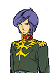
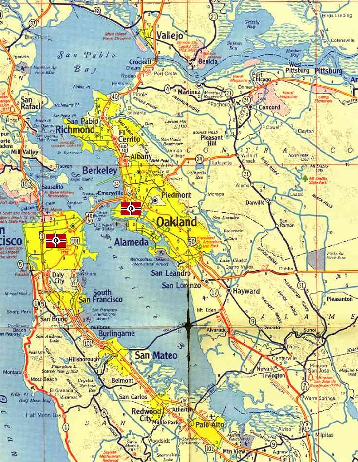

California Base California Base
North America, San Francisco Urban Coastal Fortress Garma Zabi California Base is the central command hub of the Terrestrial Assault Force, and oversees the entirety of Zeons operations on Earth. Furthermore, it is where 95% of Zeons new designs for terrestrial combat are made, and the shipyards and mobile suit factories here work night and day to put out as many weapons as they can. From here Garma Zabi oversees both the TAFs defense operations as well as the MAFs mining operations. Further, California houses the second most important Duchy spaceport, second only to Odessa in importance. The actual fortress is situated in the old San Francisco bay, well defended from all sides.  Garma Zabi The youngest member of the Zabi family, Garma is not a fighter at heart, but understanding the rules of noble families he has not rejected any of his fathers will. The commander of the TAF, Garma prefers to fight in his mobile suit, having trained in the original ZMF academy. Former teammate of Char Aznable at the battle of Lourm, Garma was noted to sink a Magellan at the battle, and is a fierce fighter in his own right. However, his close friends will tell you that his heart is not in the war. California Base  |